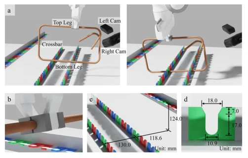
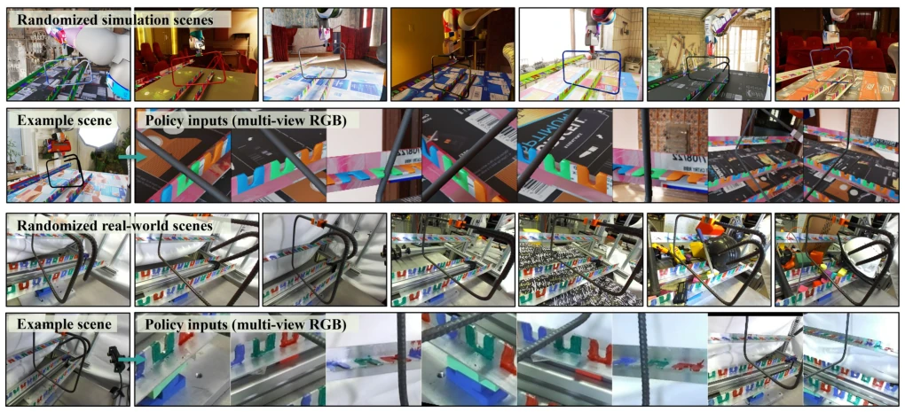
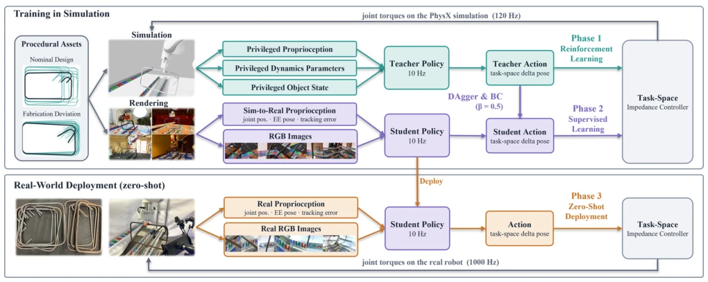
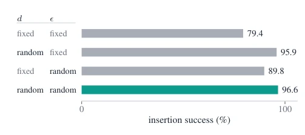
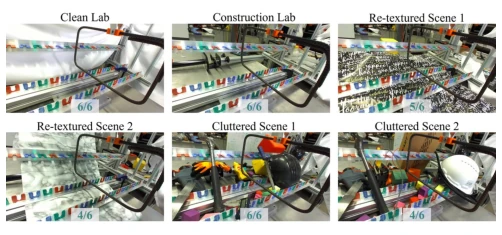
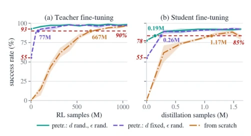

This paper moves the "screw-turning" level hard work of rebar insertion into simulation, surprisingly achieving true zero-shot transfer to reality, and the 91.3% success rate is indeed eye-catching. This RebarSim "privileged teacher + visual student" distillation approach works in scenarios with rich contact and geometric variation, giving a boost to robots doing dirty work in industry. However, the authors did not shy away from the fact that the premise of this task is "the rebar is already in hand", grasping still relies on others, and the camera view is fixed; changing shelves requires recalibration, does this count as "semi-automation"? Additionally, there is always a gap between physical collisions in simulation and reality, leading to some failure modes (e.g., getting stuck in a slot and unable to rotate out) being more tricky in reality. Overall, this is a solid Sim-to-Real case, but there is still a distance from a true "fully automatic construction site robot", especially that fixed view hard flaw, which may not be flexible enough in complex construction site environments, after all, construction sites are not as clean as laboratories.
Rebar tying on construction sites is high-repetition, labor-intensive work, workers are prone to injury and there is labor shortage [1], [2]. Automated insertion is an important step. But rebar geometry varies greatly (nominal design + manufacturing tolerance), and the gap is only 1.4mm, with rich contact. Existing methods [3] rely on real demonstrations, high cost and hard to generalize. State-based methods [6], [7] require precise object pose estimation, but manufacturing tolerance leads to inaccurate CAD models. OmniReset [8] can do end-to-end RGB transfer, but only verified on simple peg-in-hole, not evaluating geometric generalization. This paper aims to solve whether end-to-end visual policies can be trained in simulation and zero-shot transferred to reality, while generalizing geometric and handheld pose variations.

Fig. 2. Task overview. (a) the robot inserts the rebar it holds into a three- slot rack, guided by the left and right cameras and its proprioception. (b) the gripper fingers. (c) rack dimensions. (d) slot dimensions.
Overall adopts Teacher-Student distillation paradigm. 1. Simulation environment: Based on Isaac Lab, generator covers nominal design (d) and manufacturing deviation (ϵ), such as length, angle, twist. 2. Teacher training: PPO reinforcement learning based on privileged state (including real pose, contact force), reward function includes alignment, success, contact force penalty, etc. 3. Student distillation: Uses DAgger + BC mix, input is 8 RGB views + proprioception. Network uses ResNet-18 to encode views. 4. Domain randomization: Lighting, texture, camera pose, dynamics parameters randomized. 5. Deployment: Real Franka robot, 2 ZED Mini cameras, image cropping mapped to virtual cameras. Key points lie in geometric diversity training and DAgger mix, preventing covariate shift.

Fig. 5. Training scenes in simulation (top) and evaluation scenes on the real robot (bottom). The student never sees a real image while it is trained: the top block is the distribution it is distilled on, the bottom block is the real-world setup it is deployed in. Each block pairs the spread of randomized scenes with one example scene and the multi-view RGB the policy actually reads in it.
Simulation training conducted on 4 L40 GPUs. Test sets include in-training (Dtrain), interpolation (Dinterp), extrapolation (Dextrap) designs. Real evaluation uses factory-produced rebar (D1, D2). Results: Sim 96%+, Real 91.3% (150 trials). Geometric diversity improves zero-shot generalization (from 55.4% to 92.6%). Pre-training reduces adaptation samples 4-6 times. Ablation shows: no appearance randomization leads to failure (2.8%), pure BC is 27.2 points worse than DAgger. Failure modes mainly inability to rollback after collision, caused by sim-real contact differences. Background robustness test shows, even in cluttered scenes success rate is still significantly higher than clean lab.
其他图片Other Figures

Fig. 3. Overview of RebarSim. Training in simulation: a procedural generator generates the rebar assets. A privileged teacher is trained with RL (Phase 1, teal) and supervises a student that sees only rendered RGB and proprioception (Phase 2, purple). Deployment: the same student, frozen, on the real cameras (Phase 3, orange).

Fig. 7. Student evaluation on D1 under the four training cases. For each training case, we report the success rate of its distilled student’s best checkpoint on D1.

Fig. 6. Real-robot success across backgrounds. The six rollouts are the same six everywhere (two rebars drawn at random from D1, three initial EE poses and rebar-in-hand poses each, held fixed as the scene changes), so the panels differ in background alone. The five deployed scenes pool to 25/30 against 6/6 in the clean lab, top left.

Fig. 8. Adaptation to Dextrap, the four designs outside the training grid. Labels indicate which components of the rebar geometry g = (d, ϵ) the pretraining randomized. The x-axis counts only adaptation samples, so each curve starts at its zero-shot success, marked on the left axis. The line is the mean over three seeds, the band their min–max. (a) teacher RL fine-tuning, dots at samples-to-90%. (b) student distillation, dots at samples-to-85%.